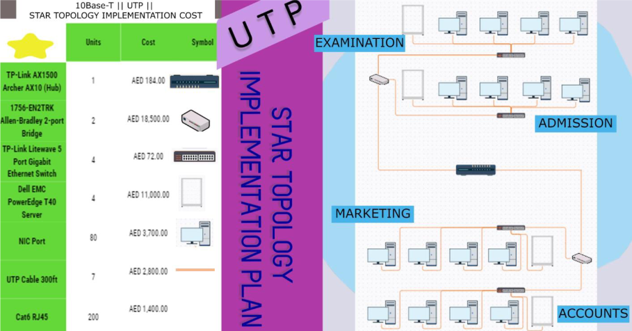
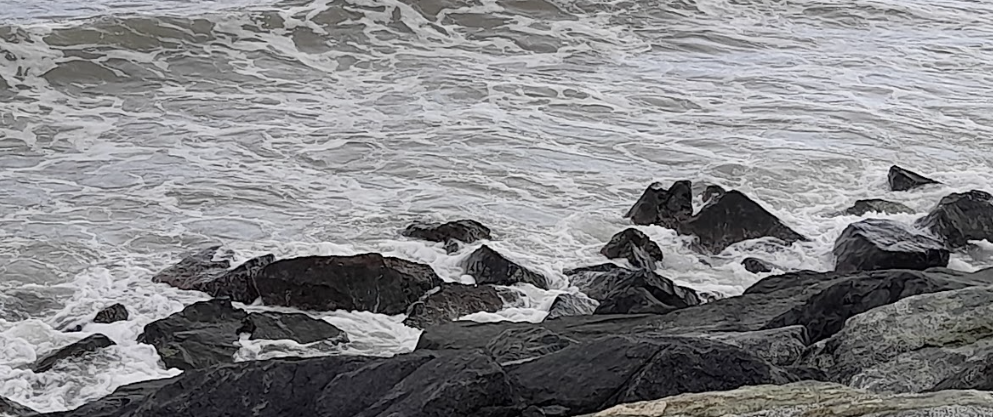

This video is my first stop motion video and it was just one of the things I have accomplished through my learning in the creative computing course.
The website itself is one of things I made using the knowledge I gathered through multiple sources other than through courseworks.
Ideation Technique Research Journal
Bitsy Game
This project was my first character controlled oriented game made with Bitsy. This game is about the adventurer
being once again played after a very long time. The game eventually deletes itself as the adventurer progresses through the last bit of the stage.
What I liked about the game was that the story was consistent and slowly climbs in emotion. The quality of the game is purposely made to fit the theme and the character's
attitude varies from each other to show their own characteristics without proper introduction. The only part I wanted to improve is the design of the corrupting map and a fitting
sound to enhance the mood of the game further.
Twine Story
One of the projects I'm proud of. Despite having its quality mediocre at best, I was still able to make up my project with music and storytelling choices. Basically, this is another
game (made using Twine) that deals more with storytelling. The game has options in which the user can engage on, altering the story completely. The
theme I chose was the three little pigs and it was played in first-person perspective to play as the pig or the wolf.
The only thing I would have improved was enhancing the quality of the game such as the choice selection and text styling.
LAN Network Poster

This project included me to making a poster about a LAN layout for four departments. I made the layout design using Creately, table using DesignCap,
and the poster styling using Pixlr. The main objective was to implement a design in which those four departments can utilize their wired network setup with each part's prices involved.
What I liked about this poster was the layout and how I properly used the star topology method. However, I think I could have improved the
parts and its prices in terms of quality.
Photography
Of course, in digital learning, we must also understand the basics of media. Those include videos such as the stop motion video mentioned earlier.
In this project, I am to present my best works of photography taken outdoors. I made it so that the theme is just nature.

Above are the pictures I took as part of my photography project.